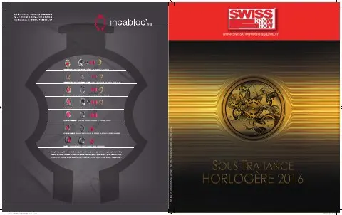

En bref
Le président de la FH dresse un bilan de la conjoncture : 2014 a été la meilleure année de l'histoire avec 22,3 milliards de francs d'exportations, mais l'abandon du taux plancher du franc en janvier 2015 et le recul de la Chine, de Hong Kong et de la Russie ont fait baisser les ventes de quelques pour-cent en 2015, la situation étant plus difficile pour les sous-traitants. Il détaille le calendrier Swissness : entrée en vigueur le 1er janvier 2017 avec un délai transitoire jusqu'à fin 2018, et révision de l'ordonnance sur les montres exigeant 60 % de valeur suisse et un développement technique en Suisse. La FH compte environ 500 membres ; un encadré liste ses rôles et les avantages réservés aux membres. La lutte contre la contrefaçon reste prioritaire, avec plus de 500 000 annonces Internet stoppées.
« C'est le seul secteur industriel pour lequel la Suisse occupe le leadership mondial. »— Jean-Daniel Pasche
L'interview intégrale
Sans tabou, le président de la FH, la Fédération de l’industrie horlogère suisse, se prête au jeu de l’interview. Ses réponses incitent toute société d’horlogerie à rejoindre ses rangs corporatistes. Interview.
Propos recueillis par Joël A. Grandjean / TàG Press +41
Cet expert en propriété intellectuelle sera certainement présent aux prochaines inaugurations du secteur. La branche horlogère, dans tous ses états, s’est désormais habituée à le recevoir, à lui permettre d’exprimer, toujours avec chaleur, les vues de sa Fédération. D’une simplicité avenante, Jean-Daniel Pasche n’en est pas moins déterminé. Son combat est louable puisqu’il défend les intérêts de toute entité, membre ou non-membre, active dans une industrie qui représente l’un des plus importants piliers économiques de la Suisse.
On entend ici ou là des voix qui se plaignent de la situation des affaires. Qu’en est-il vraiment de l’horlogerie ces deux dernières années ?
La hausse des exportations s’est poursuivie jusqu’à fin 2014 pour en faire la meilleure année de l’histoire horlogère suisse avec un montant total de CHF 22,3 milliards de francs. L’abandon par la Banque nationale suisse du taux plancher du franc par rapport à l’euro le 15 janvier 2015 pèse sur la marche des affaires horlogères, de même que la baisse de la consommation en Chine, à Hong Kong et en Russie. Il en résulte une baisse des exportations de quelques pourcents pour 2015.
Les acteurs du secteur sont-ils tous logés à la même enseigne ?
Au-delà d’un résultat qui reste relativement bon, compte tenu de la conjoncture et des bases de comparaison, la situation est très différente d’une entreprise à l’autre. Des entreprises vont bien, d’autres vont mal. Plusieurs acteurs horlogers recourent au chômage partiel, voire procèdent à des licenciements. La situation est plus difficile en général pour les sous-traitants.
Que nous réserve l’avenir, des indices ?
Nous savons que notre branche est soumise aux aléas conjoncturels. Je reste néanmoins confiant dans l’avenir de l’horlogerie suisse, sachant les potentiels de développement qui subsistent.
Où en sommes-nous dans les travaux relatifs au Swiss made et au Swissness ?
Le Parlement avait accepté le projet Swissness en juin 2013 et le Conseil fédéral, le 2 septembre 2015, a fixé l’entrée en vigueur de Swissness au 1er janvier 2017 avec un délai transitoire de deux ans, soit à fin 2018. Cela signifie que le taux minimum de valeur suisse de 60 % entre en vigueur à ces dates. Actuellement se déroule la procédure de consultation concernant la révision de l’ordonnance réglant l’utilisation du nom suisse pour les montres. Sans surprise, le taux de 60 % va être introduit dans cette ordonnance pour des raisons de cohérence. En plus, ce projet de révision veut introduire l’exigence selon laquelle le développement technique de la montre et du mouvement doit être effectué en Suisse. Le Conseil fédéral devrait adopter cette révision au printemps 2016. Nous nous trouvons donc dans la dernière ligne droite du projet, projet qui a débuté en 2007 déjà.
L’horlogerie est une exception. Est-elle perçue comme telle par ceux qui nous gouvernent ? En quoi est-elle exceptionnelle et non comparable à d’autres secteurs ? Qu’a-t-elle de plus, de moins ?
Les autorités sont sensibles aux intérêts de l’horlogerie. Même si celle-ci est relativement modeste en termes de chiffres au niveau mondial (60 000 emplois et 22,3 milliards de francs à l’export), elle bénéficie d’une réputation sans commune mesure eu égard à sa grandeur justement. Elle confère à la Suisse une image de marque reconnue mondialement. Les marques suisses sont visibles partout et nos autorités en sont fières aussi. C’est le seul secteur industriel pour lequel la Suisse occupe le leadership mondial. Ce qui caractérise la branche, c’est ce mélange de tradition et d’innovation ainsi que de technique et d’esthétisme. Même si les autorités prennent en compte les intérêts de l’horlogerie, celle-ci n’est pas privilégiée pour autant par rapport aux autres secteurs, elle doit se battre pour défendre ses intérêts.
La contrefaçon ne semble plus occuper le devant de la scène ces derniers temps. Avez-vous baissé la garde dans ce domaine ?
La contrefaçon reste un sujet prioritaire pour la FH et elle continue d’être très active dans le monde entier. Dans notre traque des annonces de copies sur Internet, nous avons fait stopper plus de 500 000 annonces depuis le début de l’année. Les douanes suisses ont saisi des centaines de fausses montres dans le cadre de leurs contrôles en 2015. Nous avons fait saisir des centaines de milliers de copies en Chine, en Arabie saoudite, en Espagne, à Dubai, au Maroc, en Turquie, en Russie, etc. Nous organisons régulièrement des séminaires de formation pour les autorités locales comme les douanes et la police, par exemple en France, aux USA et à Dubai.
Parmi vos membres (merci d’en préciser le nombre), quelle est la part des entreprises qui ne sont pas liées à des marques ?
La FH compte environ 500 membres dont un peu moins de la moitié sont des marques qui vendent des montres terminées et dont le reste sont des sous-traitants ou d’autres organisations horlogères.
Une marque suisse peut-elle exister sans faire partie de la FH ? Quels sont les avantages à devenir membre ?
Une marque suisse peut exister sans faire partie de la FH, à condition que la FH existe parce que d’autres marques en font partie. Toute marque établie en Suisse profite de la FH, qu’elle soit membre ou pas. (Ndlr : lire l’encadré sur les rôles de la FH). Les entreprises sont membres, car elles estiment utiles de soutenir une instance qui défend des intérêts collectifs de la branche. Alors qu’elles sont directement touchées, ces entreprises ne peuvent pas se défendre seules ou ne peuvent le faire que plus difficilement.
Principaux rôles de la FH
Le premier rôle de la FH est de défendre les intérêts collectifs de la branche et elle est la seule à le faire dans son domaine. Quelques exemples:
• s’assurer que les règles d’origine prévues dans les accords de libre-échange (Chine, Japon, Corée du Sud, Hong Kong, Mexique, UE, etc.) soient compatibles avec les besoins de l’horlogerie suisse et obtenir une baisse des taxes dans lesdits pays,
• établir les normes techniques de l’industrie horlogère suisse (NIHS) ainsi que les normes ISO concernant l’horlogerie et réagir aux projets de normes proposés par nos concurrents (Japon, Chine, UE),
• intervenir face au projet de révision de la loi sur les cartels pour préserver les accords de distribution,
• obtenir des exceptions face à des règles européennes qui veulent interdire ou limiter l’usage de substances indispensables à l’horlogerie,
• faciliter les exportations de montres en métaux précieux en Russie (accord de réciprocité),
• intervenir contre les abus en matière de label Swiss made et mener la révision législative pour renforcer la protection du label en Suisse et dans le monde,
• délivrer des statistiques horlogères,
• faire entendre la voix de l’horlogerie dans les sujets de politique économique suisse (relations avec l’Europe, énergie, commerce extérieur, politique fiscale),
• intervenir dès qu’un obstacle se dresse sur le chemin des montres suisses.
Exemples d’avantages réservés aux membres
• avis de droit et renseignements juridiques sur les sujets spécifiques horlogers, examen de contrats de distribution par exemple,
• information directe sur tout changement législatif dans le monde susceptible d’affecter l’activité horlogère,
• accès direct à l’information sur les marchés en termes de taxes, de règles particulières,
• accès à une base de données très fouillées sur les statistiques horlogères suisses,
• problème avec les autorités douanières,
• lutte contre les copies de modèles.
Texte paru dans Swiss Knowhow – Sous-traitance horlogère 2016, p. 2-3.
Personnes citées
- Jean-Daniel PaschePrésident de la FH
- Joël A. GrandjeanJournaliste, TàG Press +41

Paru dans
Swiss Knowhow – Sous-traitance horlogère 2016
2016 · page 2-3 · article original en français
Lire l'article complet PDF